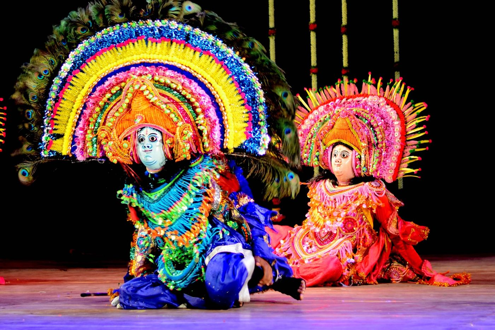
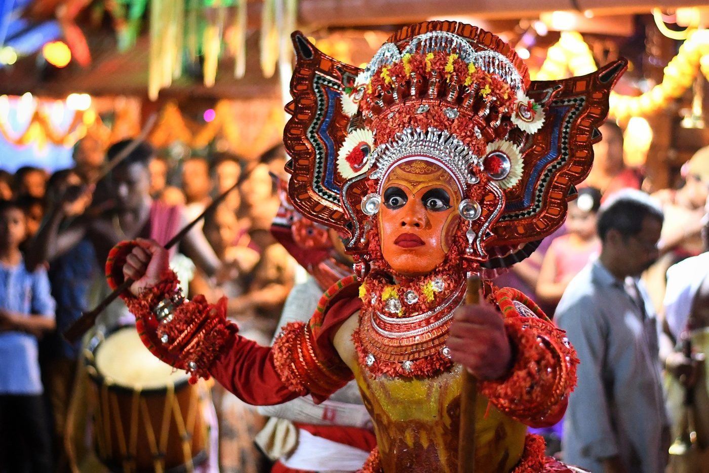

Chapter 21: Folk and Tribal Performance¶
Most of the music, dance and drama performed in India has never been called “classical”. It is performed in villages and small towns, at festivals, weddings, harvests and pilgrimages, in shrines and sacred groves, by specialist hereditary performers or by whole communities, in hundreds of languages and dialects. No survey can do more than sample this field. The sample offered here moves from song in everyday life to the bards who sing oral epics, the dances of festivals and communities, the ritual performances in which performers become gods, the music and dance of the Ādivāsī (tribal) peoples and the instruments of folk music; but it begins by asking what the words “folk” and “tribal” mean, and it ends with how the performers have fared in modern India. Popular and regional theatre is treated in Chapter 20 and puppet theatre in Chapter 19; the wider knowledge systems of tribal and folk communities are the subject of Volume 23 of this series, Jana–Jāti.
21.1 The Idea of “Folk”¶
Indian music theory has long distinguished mārga, the canonical art described in the treatises, from deśī, the music and dance of the regions (Chapters 4 and 12). But deśī meant something different from the modern “folk”: the medieval theorists used it for the regional art music and dance of courts and temples as well as for popular forms, and much of what they called deśī later became “classical”. The modern categories of “folk” and “tribal” arts were shaped in the nineteenth and twentieth centuries by colonial ethnography, which classified Indian society into castes and tribes, and by nationalist and post-Independence cultural policy, which presented India’s “folk” arts as the expression of the nation’s rural soul and staged them at the Republic Day celebrations and in national festivals from the 1950s onwards (Vatsyayan 1976).
These categories are useful but must be used with care. “Folk” does not mean simple, anonymous or unchanging: many folk genres are highly skilled, professional arts with known lineages of performers and constantly changing repertoires. The line between folk and classical has always been crossed in both directions, as rāgas, rhythms, genres and stories moved between village, temple and court (Chapters 7 and 5). And “tribal” communities are not isolated survivals from the past but peoples with their own histories, many of them in long contact and exchange with their neighbours. Above all, folk and tribal performance must be understood on its own terms — in its own social and ritual contexts and for its own purposes — and not as the raw material from which “higher” arts were made.
21.2 Song in Everyday Life¶
Song accompanies almost every activity and stage of life in rural India. There are work songs for grinding grain, transplanting rice, rowing and herding; seasonal songs for the rains (kajrī, jhūlā), for spring (caitī, phāg) and for festivals; and songs for birth (sohar), marriage, and death. Much of this repertoire is sung by women, often in groups, and it gives voice to women’s experience — of marriage and separation from their natal families, of conflicts with in-laws, of desire and humour — with a frankness rarely found in literary or classical genres. In Maharashtra, thousands of women’s grinding songs (ovī) have been recorded; in the Bhojpuri-speaking region of Bihar and eastern Uttar Pradesh, Edward Henry’s study showed how the songs of different occasions and social groups form a whole musical culture (Henry 1988).
Devotional song is equally widespread: the bhajans and kīrtans of village congregations; the abhaṅgs of the Vārkarī pilgrims to Pandharpur; the songs of the Sufi shrines; the Sikh śabad; and the songs of particular saints and cults (Chapter 9).
21.2.1 The Bāuls¶
The Bāuls of Bengal, in both India and Bangladesh, are wandering religious singers whose songs express an esoteric spiritual path that draws on Vaiṣṇava, Sufi and Tantric ideas and rejects the authority of scripture, caste and religious institutions. Their songs speak of the “man of the heart” (moner mānuṣ), the divine within the body, in images of rivers, boats, birds and cages. The most famous Bāul poet, Lālan Fakir (traditionally c. 1774–1890), was claimed by both Hindus and Muslims. Bāuls accompany themselves on the one-stringed ektārā or the plucked drum khamak, often with a small drum and ankle bells. Jeanne Openshaw’s study shows the diversity of people and practices covered by the name, and the gap between the romantic image of the Bāul popularised by Rabindranath Tagore and the social realities of Bāul life (Openshaw 2002). UNESCO inscribed the Bāul songs, as nominated by Bangladesh, on its list of the Intangible Cultural Heritage of Humanity (proclaimed 2005).
21.2.2 Hereditary musicians of Rajasthan¶
In western Rajasthan, the Manganiyār and Laṅgā communities, both Muslim, are hereditary professional musicians who for generations sang for patron families (jajmān) of Hindu Rajputs and other castes and of Muslim herders, performing at births, weddings and festivals the songs of the patrons’ genealogies, ballads, love songs and devotional songs. They accompany themselves on the bowed kamāicā (Manganiyār) and the sindhī sāraṅgī (Laṅgā), with the ḍholak and the clappers called khartāl. From the 1960s, documentation by folklorists and the interest of urban and international audiences brought some of these musicians to world stages, transforming the economy of the tradition while the old patronage relationships continued in the villages.
21.3 Bards and Epics¶
India has a rich tradition of oral epic, performed by professional bards for particular communities, often over many nights. The volume Oral Epics in India edited by Stuart Blackburn and others surveyed this tradition and showed how closely each epic is tied to the identity, religion and social position of the community that sponsors it (Blackburn et al. 1989).
- Pābūjī kī paṛ.
- In Rajasthan, the epic of the hero-god Pābūjī is performed by a bhopā, a priest-singer of the Nāyak community, with his wife, before a long painted cloth (paṛ) that depicts the episodes of the story; the bhopā plays the bowed rāvaṇhatthā, and the bhopī holds a lamp to illuminate the part of the cloth being sung. The performance, which may last through the night, is an act of worship of Pābūjī as well as a story. John Smith’s edition and translation of the epic is one of the major works of Indian folklore scholarship (Smith 1991). A similar tradition, with a still larger cloth, celebrates Devnārāyaṇ, a god of the Gūjar herders.
- Ālhā.
- In Bundelkhand and the Gangetic plain, the epic of the brothers Ālhā and Ūdal, warriors of twelfth-century Mahoba, is sung during the rains, especially by and for agricultural communities.
- Pandvānī.
- In Chhattisgarh, a single performer narrates and enacts the Mahābhārata, holding a tambūrā decorated with peacock feathers that becomes, in performance, a mace or a bow; Teejan Bai made the vigorous standing style famous.
- Southern bow-songs and story-songs.
- In the Tamil country the villuppāṭṭu (“bow song”) is performed with a large musical bow struck with sticks; in Andhra the burrakatha is performed by a lead singer with two companions who joke and comment, and was adapted by political movements in the twentieth century to spread their messages.
21.4 Festival and Community Dances¶
Folk dance in India is overwhelmingly communal: it is danced in circles, lines and processions by the members of a community rather than by specialists for spectators, and it belongs to a festival, a season or a rite of passage. Its history in the last hundred years has been a history of what happens when such dances acquire spectators — in cities, on the stage, in the diaspora and on screen. A few examples show the range of what has happened (Vatsyayan 1976).
On each of the nine nights of the goddess (Navarātri) in Gujarat, women gather after dark around a lamp set in a perforated clay pot (garbo) or an image of the goddess and dance garbā: they move round the centre in a ring, clapping, turning and stepping together, while one of them leads a song to the goddess that the others take up. Later in the night men and women join in dāṇḍiyā rās, striking their sticks against those of their partners as the rings move. The dance needs no audience and no training beyond growing up within the community. In the last half-century the same festival has become a vast urban and diasporic event, with professional singers, amplified bands, rented grounds, passes and new steps learnt in classes before the season; UNESCO inscribed garbā on its list of the Intangible Cultural Heritage in 2023. The communal form survives inside the spectacle, but the spectacle has changed who dances, where, and for whom.
Bhāṅgṛā travelled further. Originally a men’s dance of the harvest season in the Punjab, danced to the large drum (ḍhol) with leaps and shoulder movements and short verses (bolī) shouted or sung, it became a staple of college competitions in the twentieth century and, through the Punjabi diaspora in Britain from the 1980s, the basis of a popular music heard worldwide. The women’s giddhā, in which dance accompanies sung couplets that comment, often satirically, on family and social life, has remained closer to its domestic setting. The difference between the two says something about which dances can be turned into a public spectacle, and by whom.
Elsewhere the history of a dance is a history of caste and stigma. Lāvaṇī, the song-dance of Maharashtra performed by women singer-dancers to the ḍholkī drum, is known for its erotic and witty songs; it was part of the Tamāśā theatre (Chapter 20) and of private “sitting” performances (baiṭhakī lāvaṇī). Its performers came largely from communities such as the Kolhāṭī and from Dalit castes, and bore the stigma attached to women who performed in public; the genre is now also performed by middle-class dancers on stage and in film, often without acknowledgment of those who created it. In Tamil Nadu the paṟai, the frame drum played by Dalit drummers at funerals and festivals and long a mark of their low status, has in recent decades been taken up by Dalit activists and artists as an emblem of pride and resistance, and is now played by troupes at political meetings and cultural festivals as well as in its old settings.
Beside these stand a great many dances that have changed less, or whose changes are less visible: the women’s clapping dances (kummi), the stick dances (kōlāṭṭam) and the pot-balancing karakāṭṭam of Tamil temple festivals; the drummers’ ḍoḷḷu kuṇita of the Kuruba community of Karnataka; the women’s tiruvātirakkaḷi of Kerala; in Rajasthan the women’s turning dance ghūmar, the terah tālī of the Kāmaḍ women, who strike cymbals tied to their bodies, and the dance of the Kālbeliyā, which the dancer Gulabo Sapera brought to international stages and UNESCO inscribed in 2010; and in Kashmir the women’s rouf. The dances of Assam and of the north-eastern hills, from Bihu to the bamboo dance of the Mizos, are described in Chapter 22.
21.5 Chhau¶
Chhau is a dance-drama of eastern India in three regional styles, each named after the place where it grew up. Seraikela Chhau, of the former princely state of Seraikela in Jharkhand, uses delicate masks and refined, stylised movement; Purulia Chhau, of West Bengal, uses large, colourful masks with towering headdresses and vigorous, acrobatic movement (Figure 21.1); and Mayurbhanj Chhau, of Odisha, is danced without masks, so that its expression lies wholly in the body. The origin of the name is disputed: derivations proposed include chāyā, “shadow” or “image”, and chāuni, “military camp”. All three styles present episodes from the epics and Purāṇas and other stories — in Purulia the goddess Durgā’s killing of the buffalo-demon is a favourite — accompanied by drums and the double-reed śahnāī, and all were traditionally danced by men.


Their movement vocabulary draws on martial exercises with sword and shield and on the movements of animals and of daily life, and the basic training resembles that of a martial art more than that of a classical dance. The occasion was the spring festival of Caitra Parva, which in the nineteenth and twentieth centuries the rulers of Seraikela and Mayurbhanj made a court festival: the princely families patronised troupes, and members of the Seraikela family were themselves celebrated dancers and choreographers. Purulia Chhau, by contrast, never had a court; it is danced through the night in village arenas by troupes drawn from many communities, Ādivāsīs among them, and its masks are made by the artisans of Charida village. After the princely states were merged into India, the state governments and the Sangeet Natak Akademi took over part of the patronage, and Chhau troupes have toured widely in India and abroad. UNESCO inscribed Chhau on its list of the Intangible Cultural Heritage in 2010, and the Ministry of Culture includes it among India’s classical dances (Vatsyayan 1976).
Chhau is treated here rather than with the classical forms because, unlike them, it has no textual theory of its own and no tradition of solo concert performance; its history is that of princely and village patronage, and a fuller account would depend on ethnographic studies of the three styles. Its ambiguous position — “classical” in one official list and not in another — illustrates how institutional these categories are. So does the Gauḍīya Nṛtya of Bengal, which the dancer Mahua Mukherjee has, since the late twentieth century, reconstructed from medieval Bengali texts, temple sculpture and regional forms, and for which recognition as a classical dance has been sought: like Odissi in the 1950s (Chapter 17), it shows a classical form being made rather than found.
21.6 Ritual Performance¶
In many parts of India performance is a means by which gods, goddesses, ancestors and spirits become present among the people. These performances are not “folk dance” in the sense of recreation, nor theatre in the sense of representation: the performer is understood to become, for the duration of the rite, the deity, who speaks, blesses, heals and judges.
21.6.1 Teyyam¶
In northern Kerala (Kannur and Kasaragod districts), the teyyam (from daivam, “god”) season runs from about October to May. In shrines and household compounds, performers from communities such as the Malayan, Vaṇṇān, Vēlan and Pulayan — castes and tribes that were long treated as low or untouchable — spend hours being dressed and painted (Figure 21.2), with spectacular headdresses that may tower several metres high, and then dance, to the drums, the story and character of one of several hundred deities, among them goddesses, deified heroes and ancestors, and the spirits of people who died tragic deaths. At the climax the performer is possessed by the deity and receives the worship of the community, including people of the highest castes, to whom he gives blessings and advice. Many teyyam stories speak of caste injustice, of low-caste heroes and women wronged by the powerful and deified after death. Scholars have debated how far the temporary reversal of hierarchy in teyyam challenges or reinforces the social order; in the twentieth century the tradition became both an emblem of Kerala culture and a site of claims by its performers to dignity and recognition.


21.6.2 Other ritual theatres¶
The bhūta kōla of the Tulu-speaking region of coastal Karnataka, performed by the Nalike, Parava and Pambada communities, similarly embodies spirits (bhūta) that protect villages and adjudicate disputes. In Kerala, muḍiyēṯṯu, a ritual drama of the goddess Kāḷī’s battle with the demon Dārika performed in Bhadrakāḷī temples (inscribed by UNESCO in 2010), and paṭayaṇi, with masks made from the sheaths of areca palms, are performed for the goddess. In the Garhwal Himalaya, the rammaṇ of the village of Saloor-Dungra, a festival of masked dances and recitations in honour of a local deity, was inscribed by UNESCO in 2009. The Rāmlīlā of north India and the Lai Haraoba of Manipur (Chapter 18) are also, in their different ways, rituals as well as performances.
The mountain regions have ritual traditions of their own, shaped by village deities who speak through mediums, by hereditary drummers of low caste whose ritual knowledge is indispensable, and, in Ladakh, Sikkim and Arunachal Pradesh, by Tibetan Buddhism. The rammaṇ of Saloor-Dungra belongs to this world; the possession rites of the jāgar and the Pāṇḍav līlā of Garhwal, the procession music of the deities of Himachal Pradesh, the masked dances (cham) of the monasteries and the lay music of Ladakh are described in Chapter 22.
21.7 Ādivāsī Music and Dance¶
India’s Ādivāsī (“original inhabitant”) peoples, officially classified as Scheduled Tribes, number several hundred communities with their own languages, religions and arts. Dance and song are at the centre of their communal life, marking the agricultural year, marriage and the cycle of life, and the worship of their deities and ancestors. Only a few examples can be given here; Volume 23, Jana–Jāti, treats tribal knowledge more fully (Vatsyayan 1976).
A Santal dance shows the pattern. At the festivals of flowers (Baha) and of the harvest (Sohrae), and at weddings, the women of a Santal village in Jharkhand, West Bengal, Odisha or Bihar dance in long lines, arms linked, moving with small steps, while the men play the drums (tamak, tumdak) and flutes; the line, not the individual dancer, is the unit of the dance, and anyone of the community may join it. The same principle governs the night-long dancing in circles and lines around a branch of the karam tree with which the Oraon, Munda, Gond, Baiga and other peoples of central and eastern India celebrate the karam festival. Other dances are more specialised: among the Raj Gonds of Telangana the gusāḍī dancers, in headdresses of peacock feathers, perform during the Dandārī festival, and the Warlis of the Sahyadri foothills of Maharashtra dance in spiral formations to the gourd-and-bamboo pipe tārpā, a dance that their paintings often depict. The Bhils of western India celebrate the bhagoriyā festival before Holi with dancing to drums and flutes.
Ādivāsī music and dance have suffered from the pressures that have transformed Ādivāsī life — displacement by dams, mines and forest policy, migration for work, and the cultural pressure of mainstream religion and media. They have also been staged, often out of context, as “tribal dances” at official functions, and adapted by urban choreographers. Many communities have responded by reasserting their arts as part of political and cultural movements for recognition, land and autonomy.
21.8 Beyond the Hindu Mainstream¶
Folk performance in India is often described as if it were exclusively Hindu, but every religious community of the subcontinent has its own traditions of song, dance and theatre, many of them the product of long interaction between communities.
The Christian communities of Kerala and Goa have performance traditions shaped by centuries of contact with Portuguese Catholicism as well as by local forms. In central Kerala, the Latin Catholic communities of the coast perform cavittu nāṭakam (“stamping drama”), a musical drama on Christian and European heroic subjects — the emperor Charlemagne, saints and martyrs — created in the period of Portuguese influence, in which the actors’ stamping on a wooden stage provides much of the rhythm; the Syrian Christians have mārgamkaḷi, a group dance in a circle around a lamp that retells the mission of the apostle Thomas. In Goa, the mando, a slow song-and-dance genre in Konkani of the nineteenth and early twentieth centuries, combines Western harmony and dance with Konkani poetry of love and social life, and the tiatr, a popular Konkani theatre that began in the 1890s, combines plays with topical songs and remains a vigorous commercial form.
Muslim communities have many traditions of their own. The Mappila Muslims of Kerala sing māppiḷappāṭṭu, a large body of songs in Arabic-Malayalam on religious, heroic and romantic themes, and perform group dances such as the women’s oppana at weddings and the men’s kōlkaḷi (stick dance) and duff muṭṭu, sung to frame drums. The Siddis of Gujarat and Karnataka, descendants of Africans who came to India over many centuries as soldiers, sailors and slaves, perform the dhamāl or goma, a drum-and-dance tradition associated with the shrines of their saints, which preserves elements of East African music. Across north India the processions of Muḥarram are accompanied by elegies (marsiya, nauḥa) and drumming, and the Sufi shrines are centres of qawwālī and other devotional music (Chapter 7).
In the Punjab, the ḍhāḍī singers perform heroic ballads, including ballads of Sikh history, to the small hourglass drum ḍhaḍḍ and the sāraṅgī; the kavīśars sing similar ballads unaccompanied. Jain communities sing devotional songs (stavan) in temples and at festivals, and Buddhist communities in Maharashtra and elsewhere, since the conversion led by B. R. Ambedkar in 1956, have created new devotional and political song traditions celebrating the Buddha and Ambedkar. These traditions are an essential part of the musical life of India, and their omission from accounts of “Indian” folk arts reflects the assumptions of those accounts rather than the realities of performance (Vatsyayan 1976; Manuel 1993).
21.9 Folk Instruments¶
Folk music uses a great variety of instruments, many of them made by the players or by local craftsmen from bamboo, gourd, wood, skin and metal (Table 21.1). Several, such as the ektārā and the rāvaṇhatthā, are among the simplest of instruments in construction yet capable of great expressive subtlety in the hands of skilled players (Deva 1978).
| Instrument | Class | Region | Use |
|---|---|---|---|
| ektārā | string | Bengal, north India | One-stringed drone of Bāuls and devotional singers |
| khamak | string-drum | Bengal | Plucked drum of Bāul singers |
| rāvaṇhatthā | bowed string | Rajasthan | Fiddle of the Pābūjī epic singers |
| kamāicā | bowed string | Rajasthan | Instrument of the Manganiyār musicians |
| tumbī | string | Punjab | One-stringed plucked lute of Punjabi folk song |
| ḍhol | drum | Punjab, Assam, elsewhere | Large barrel drum of dances and processions |
| ḍholak, ḍholkī | drum | north and west India | Small barrel drum of folk and devotional song, lāvaṇī |
| paṟai | drum | Tamil Nadu | Frame drum of Dalit drummers |
| pepā | wind | Assam | Buffalo-horn pipe of Bihu |
| pūṅgī | wind | north and west India | Gourd pipe with reeds (snake-charmer’s pipe) |
| tārpā | wind | Maharashtra | Gourd-and-bamboo pipe of the Warlis |
| alghozā | wind | Rajasthan, Punjab, Sindh | Double flute |
| gogonā | idiophone | Assam | Bamboo jaw harp |
| khartāl | idiophone | Rajasthan | Wooden clappers |
| ciṃṭā | idiophone | Punjab | Tongs with jingles |
21.10 Folk Performance in Modern India¶
The twentieth century transformed the world of folk performance. Colonial and post-colonial folklorists collected songs and stories; nationalist writers and artists, from Tagore to the theatre directors of the 1960s, drew inspiration from them; and the Indian state, through the Republic Day celebrations, the National Folk Dance Festival (from the 1950s), the Sangeet Natak Akademi, the regional Zonal Cultural Centres (from the 1980s) and state academies, presented folk arts as the heritage of the nation. Recordings, radio, cassettes and later the internet created new markets and audiences; folk songs and dances entered film music and popular culture; and some performers, such as the Manganiyārs, Bāuls and Kālbeliyā dancers, found international careers (Manuel 1993).
These changes have been double-edged. Patronage has shifted from local communities to governments, festivals, tourists and media; performances have been shortened and adapted for the stage; and the arts of low-caste and Ādivāsī communities have sometimes been celebrated as “heritage” while their performers remained poor and stigmatised. Some traditions have declined as their occasions disappeared; others have flourished in new forms. Documentation by archives and researchers has preserved recordings of many traditions, but the survival of a living art depends above all on the communities that practise it and on their ability to make a living and to be respected for it. Discussions of “endangered” folk arts are most useful when they take account of what the performers themselves want.
Further Reading¶
Vatsyayan (1976) surveys the folk dances of India and their relation to the classical forms. Blackburn et al. (1989) is the standard collection on oral epics, and Smith (1991) an edition and study of the Pābūjī epic. Henry (1988) studies Bhojpuri song, Openshaw (2002) the Bāuls, and Manuel (1993) the effects of cassette technology on popular and folk music. For instruments see Deva (1978).